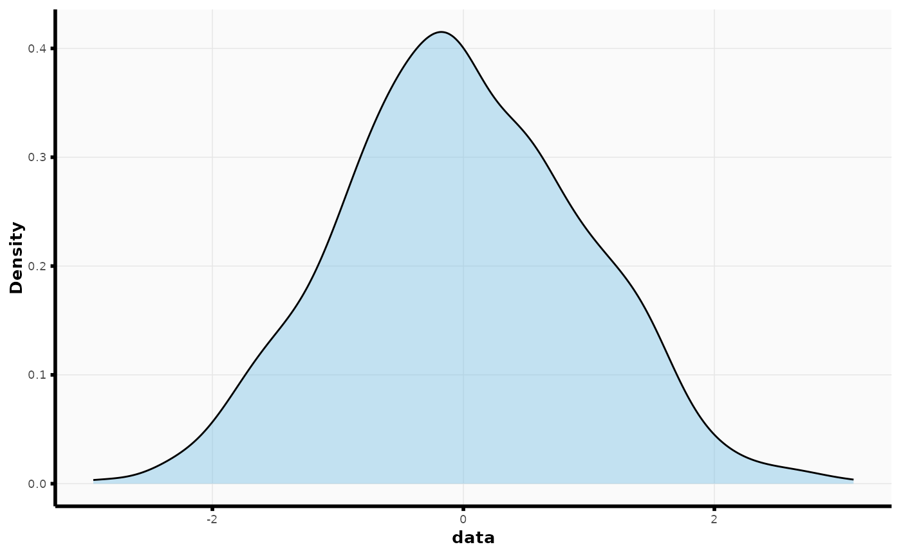
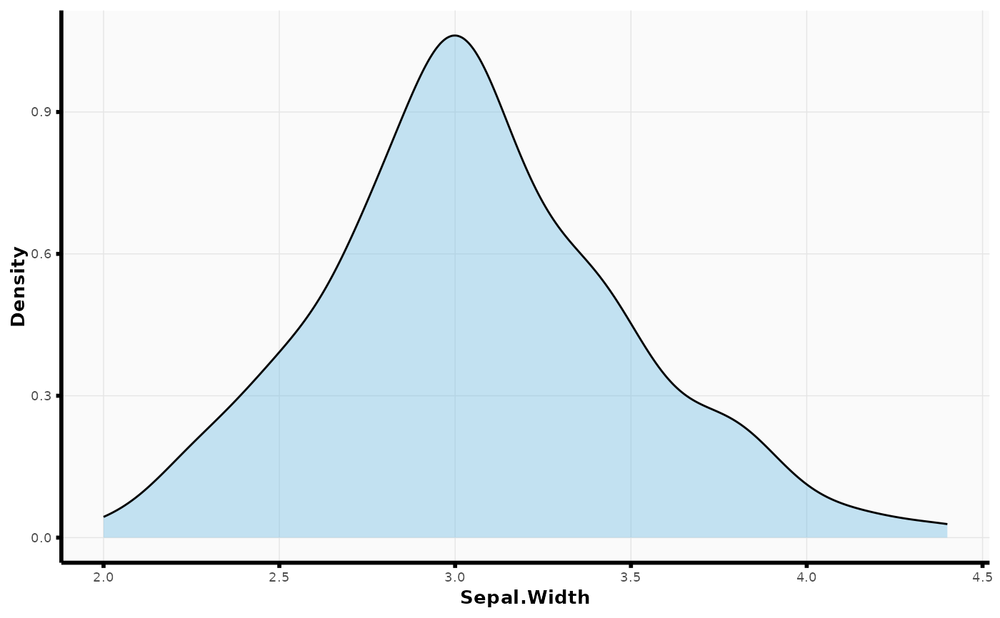
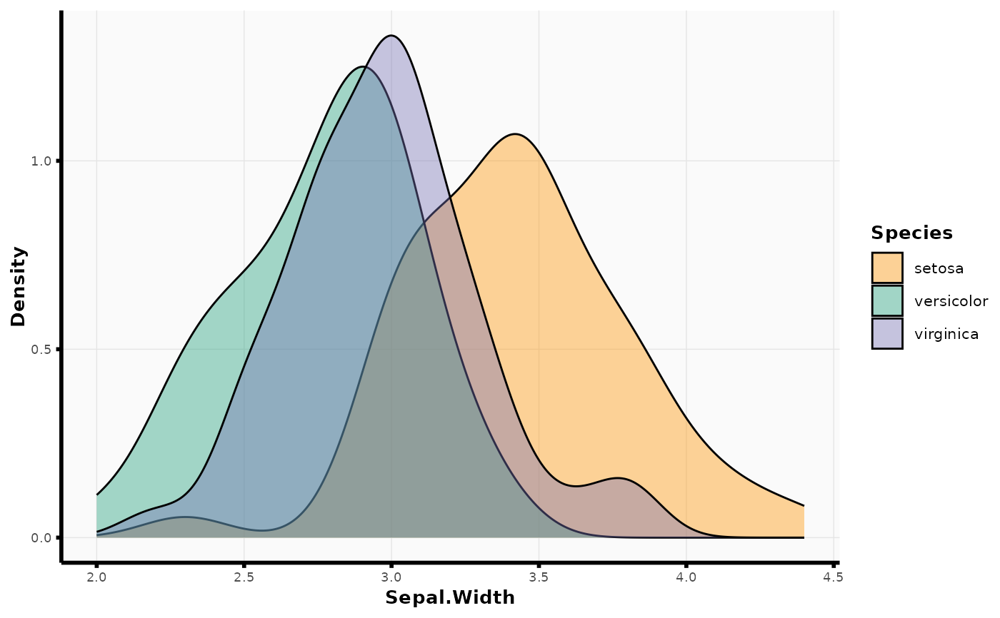

Kernel density plot wrapper for ggplot2
plot_density.RdConvenient wrapper around ggplot2::geom_density().
Arguments
- data
Data frame to use for plot.
- x_str
Character string. Name of variable in
datato plot on x-axis. IfNULL, plot density using all values in data frame.- fill_str
Character string. Name of variable in
datato use as fill aesthetic in plot.- fill
Fill color. Only used if
fill_strisNULL.- alpha
Alpha value for transparency.
- ...
Other arguments to pass to
ggplot2::geom_density().
Examples
## plot distribution of all data in data frame
plot_density(as.data.frame(rnorm(1000), nrow = 100))

## plot distribution of a single column in data frame
plot_density(iris, x_str = "Sepal.Width")

plot_density(iris, x_str = "Sepal.Width", fill_str = "Species")
